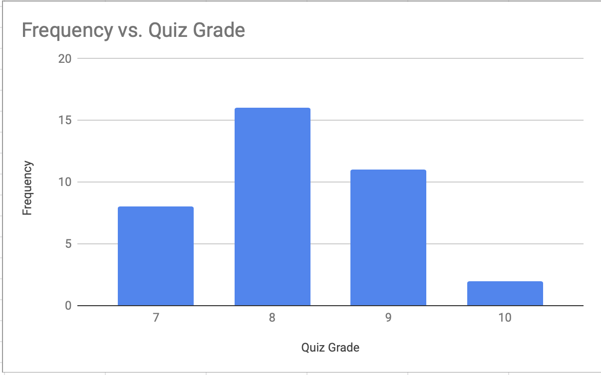

For my histogram I used data from the "crafty penguin". I put the data for the quiz grades in a google sheet with one column being the grade recieved and one being the frequency that grade was received. I then had google sheets automatically make the chart with the frequency as the y value and grade as the x.
